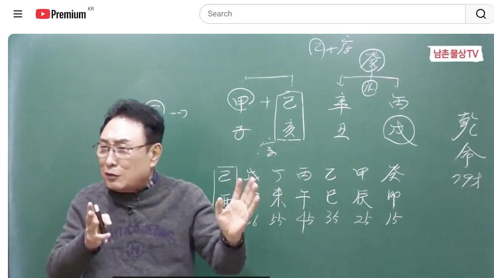

남촌물상TV 전체 문서 › 동영상 V0105
물상론으로 한번에 직업 찾는 놀라운 비법이 여기에 있다

| 문서 번호 | V0105 (동영상) |
|---|---|
| 영상 URL | https://www.youtube.com/watch?v=YjJIsnQn6Q4 |
| 영상 ID | YjJIsnQn6Q4 |
| 게시일 | 2024-12-09 |
| 길이 | 21:21 (1281초) |
| 조회수 | 1,950회 (수집 시점 기준) |
| 카테고리 | Howto & Style |
| 자막 | ko (자동생성) |
| 수집 시각 | 2026-08-30 17:03 (KST) |
영상 설명 (YouTube 설명 원문 그대로)
물상론으로 한번에 직업 찾는 놀라운 비법이 여기에 있다 #사주팔자 #사주풀이 #물상론
전체 자막 (468구간 · 타임스탬프 클릭 시 해당 장면으로 이동)
[0:00]근데이 사람이 주수로 세기 하 자
[0:04]세기 한다는
[0:07]얘기는 아 병술 신축 기해 갑자
[0:12]79세의 남자 사주입니다 근데
[0:14]우리들이 이제 봤을 때 항시 천가
[0:16]합의 원리에서 뭐 합수 핵심이
[0:20]이제 가만히 보면은 합수 또 어
[0:23]각기 합이다 이제이 경우가 양쪽으로
[0:26]사실 다 묶여 있는 사주가 되죠 지금
[0:28]현재 이럴 때 여러분들이 굉장히
[0:31]답답하게 느낄 때가 많이 있습니다
[0:33]근데 이런 것을 수할 수 있는 방법을
[0:36]저도 연구를 많이 해서 해봤고
[0:38]여러분도 어 쉽게 풀 수 있는 방법을
[0:41]제가 오늘 설명을 드리겠습니다 그래서
[0:43]과연이 사람이 어떤 방법으로 먹고
[0:45]살고 왜이 사람이 주유소에서 먹고 살
[0:49]수 있는 방법이 직업이 선택할 수
[0:51]있었던가 이걸 가지고 여러분들한테
[0:54]설명을 드릴테니까 한번 같이 한번
[0:56]풀어봅시다 자
[0:59]그러면은
[1:01]일주이
[1:02]기토일주 사실
[1:04]보면은 큰 재물을 욕심내면 안 되는
[1:07]사람들이에요
[1:08]사실은요 그래서 적당하니 갖고 사는게
[1:11]좋은게 기토일주 그래서 일반 사람의
[1:15]기토일주 재벌은 별로 기토 제는
[1:18]없어요 자 그러면 우리가 그 사주
[1:22]보실 당시 합으로 뭐 묶여
[1:26]있다으로 각기으로 묶여
[1:29]있고 이렇게 묶여 있는 사주가 보면은
[1:32]뭐 답답하다 그 고전에서는 이거
[1:34]가지고 해결 못 해요 안 됩니다 풀
[1:36]수가 없는 거예요 그나 우리들이 보는
[1:39]방법은 다르게 풀어볼 수 있는 방법이
[1:42]있다 그
[1:42]말입니다 그러면이이 사람 사주가 뭐가
[1:47]재물입니다
[1:49]자 물이 재물이란 말이에요 자 수가
[1:53]재물인이이 돈에 대한
[1:57]재물이 기토가이 재물을 취하는 방법이
[2:00]어떻게 있겠느냐 기토는 큰 물을 막
[2:04]큰 돈을 으게 되면 무너지게 되는
[2:06]것이고 작은 계수의 물을 가지고 살면
[2:09]안전하게 살아갈 수 있는 방법이
[2:11]있는데 근데 천간에 지지에는이 회
[2:14]회자가 있습니다만은 천간에 물이
[2:16]없어요 재물이 없다 그러면 항시
[2:20]천간에서 재물을 만들 수 있는 것이
[2:22]무엇인가를 보라 그 말이에요 자 그
[2:25]합수 있단 말이야 합수
[2:28]여기에 제이 수가 여기 나의 재물을
[2:32]만들어 주는 글씨 아닙니까 지지는
[2:34]물론 행동이니까 할 수 있지만
[2:37]천간에서 재물을 만든 글씨는
[2:40]합수 그럼 합수 무슨 물이에요
[2:43]자 계수 물이다 이제 이게 이게 우리
[2:47]그 물상론 어 사용하는 방법이죠 일반
[2:52]고전에서는 저 계수이다고 몰라요
[2:54]수면 무리야 이렇게만 하지 신빙성이
[2:57]없는 그런 것을 가지고 사실 지금까지
[2:59]공부 해왔다 그러면 여기 물은 개수다
[3:02]그 말이에요 자 그럼
[3:06]개수면시간
[3:10]물이 되기 때문에 자기가 수용할 수
[3:14]있는 물이 된다 이렇게 보시면 되죠
[3:18]그런데이 물이 한번 분석을 해
[3:21]보자이 물이 그러면 어떤 물이 겠느냐
[3:24]계수 중에서도 우리가 그냥 작은
[3:27]물로만 생각을 하고 빗물이라고 생각을
[3:29]했는데
[3:31]뜨거운 물이야 찬물도 알 수가 있다
[3:34]그러면 어떻게 해서이 사람이 물이
[3:36]뭔가를 생각해보면 병에서 불에서
[3:40]화학적으로 만드는 물이에요 그죠
[3:43]그러면 자이 병이라는이 술토 때문에
[3:45]그런 거예요 술토
[3:48]때문에 병화에 뿌리를 존재하는 인을
[3:52]가지고 있는 거예요 그럼 어떤 얘기냐
[3:54]목이 있기 때문에 인술이 된다 얘기죠
[3:57]그죠 그이 생을
[4:01]해본다면 그냥 근거없이 호수에게 이거
[4:04]아니에 그건 아니라고 어 갑목이
[4:07]존재하기 때문에 뿌리에 호수이다
[4:11]보시면 돼요 그러면 병어의 뿌리는
[4:14]오하란 말이에요 그럼 관목이 있으므로
[4:17]호수 되잖아요 이러기 때문에이 물이
[4:20]더 물이 될 수 있다는 얘기입니다
[4:22]분지 아시겠죠 그래서 그러면 과연
[4:25]찬물과 건물의 차이가 뭐고 어떤
[4:27]관계가 있겠느냐 우리는
[4:30]물을 끓여서 읽혀서 먹는 방법이 있고
[4:34]뜨거운 물을 막는 방법이 여러 가지
[4:35]종류가 있죠 근데 이제 사주 상에서
[4:38]뭐 그 일일이 뭐 뭐 뜨거운 물 찬물
[4:40]다 구비한다 하지만 어떤 직업성 볼
[4:44]때 활용하는 방법으로 쓰자는 얘기지
[4:46]그것이 뭐 더운물 뭐 참물 뭐
[4:48]세상인데 뭐 다게 뭐 있 할 수도
[4:50]있어요
[4:52]그렇다면은이 병화의 불해 먹는 물은
[4:57]결과
[4:58]술이라는이 화 만들어진 물이에요
[5:01]그것과 금이 합에서 만든 물이
[5:05]합수 계수의 물이다 그 말이에요
[5:07]그래서 더운
[5:09]물이다 그러면 이제 더운물을 사용하는
[5:13]직업이 뭐가 있겠냐 생각하면 되죠
[5:14]우리가 그러면 더운물을 쓴 것은 자
[5:17]사우나의 목욕탕을 한 사람이 있을
[5:19]거고 그다음에 이제 그럼 왜 주수는
[5:21]더운 물이에요 자 화학적인 물을
[5:24]만들어 내기 때문에 더운물고 본다 그
[5:27]말입니다 어떤 걸 우리가 주소 본래
[5:29]기름이
[5:31]이게 유 정해서 나오는 거 아니에요
[5:34]어 그래서 정지할 수 있는 화학적인
[5:36]물로 봤을 때 이것을 우 기름으로
[5:38]표현할 수도 있다고 본다 그 말이야
[5:39]이건 제가 수많은 사람 여러 사람을
[5:42]검증을 해서 여러분들한테 발표해
[5:44]드리는 거지 그냥 이거 한 사람
[5:46]가지고 그렇다 이렇게 저는 절대 안
[5:48]해요 그래서 항시 여러분들은 올해
[5:52]공부하고 내년 공부하고 또 다르다
[5:54]얘기를 실감을 느길 수 있는 것은
[5:57]제가 1년 내내 검증하고 그걸 해서
[6:00]이게 장 있다고 인정이 되면 여러분들
[6:02]이건 이렇습니다 해준다 그 말이에요
[6:05]그러니 틀릴 수가 없는 거죠 그래서
[6:08]우리의이 그 명력을 하던
[6:11]사람들이 대부분이 쟁인 소리를 듣는
[6:14]이유가 그것 뿐이고 또 사주쟁이 소리
[6:17]듣는게 아니다이 말 우리는 술로서
[6:20]근거를 제시하고 어디 가서 얘기해도
[6:23]어느 선생님하고 얘기할 수 있는
[6:25]이러한 사람이 우리가 할 수 있는
[6:27]일이지 그냥 단순하게 사주 이런
[6:30]인생이
[6:31]아 과거에는 그렇게 생각할 수 있지만
[6:34]우리 물산 하신 분들은 선생님의
[6:37]대우를 받는 것이지 결혼가 사주쟁이대
[6:39]받는 거 아니다 그 말입니다 왜 학문
[6:42]체계가 확실히 돼 있는 공부를 하기
[6:44]때문에
[6:45]그렇다 그럼 어떤 학문을 많이해요
[6:48]이렇게 얘기할 수도 있죠
[6:50]그러나 학문으로 했던 것도 고전처럼
[6:54]이렇게 그 그냥 수의 물리라는
[6:57]존재 관의 원리만 가지고가 그렇게
[7:00]공부를 했지만 지금 시대는 얼마나
[7:02]변하고 달라지냐 그 말이에요 엄청나게
[7:05]변했고 변하
[7:07]왔는데 그 과거에 수는 물인데
[7:11]무슨 물도 모르면서 공부를 했던
[7:13]거예요 이것을 제가 밝혀낸 사람이
[7:16]접니다 청관 합의 원리에서 소위
[7:20]상생으로 돼 있는 것을 상극으로
[7:22]만들어서 만들 수 있는 존재 이거
[7:25]우리가 천관의 원리인데 이제 이걸
[7:28]가지고 여러분들한테 현실적으로 우리는
[7:30]사용하기 때문에 적중률이 매우
[7:32]높다 학문으로 존재하기 때문에
[7:35]여러분들은 사주 쟁기가 아이
[7:37]선생입니다 이렇게 칭호를 붙일 수
[7:39]있다고 본다 그 말입니다 자
[7:42]그러면 지금 한 가지 방법으로서 그
[7:45]풀어지는 방법은 여러 가지 있다고
[7:47]그랬어요 합이 풀어줄 때는 인호
[7:50]수의대는 풀어져요 안 풀어져요
[7:52]풀어지지 사미가 되면 풀어져 안
[7:54]풀어져 풀어진다 쉽게해서 지지로 합이
[7:58]풀어지는 방법을 우리는 공부를 했다
[8:01]그 말입니다 그러면 여기 이제 각기
[8:04]합으로 돼 있는 것은 어떤 현상이 올
[8:07]건가 이게
[8:09]문제죠 자이 경우를 잠깐 짓고
[8:13]넘어가겠습니다 그러면 이제 수의
[8:16]물을 물을 우리가
[8:19]아이 각기 합에 대한 합을 되면
[8:22]갑목이 뭘로 변해요 목으로 변해서
[8:26]적당한 정도 수준만 가지고 살 거예요
[8:31]근데이 사람이 주수로 세긴 하 자
[8:34]세기 한다는
[8:36]얘기는 세개이 을목을 쓸 수 있는
[8:40]거죠 나무를 세 개 심다 보면 되죠
[8:42]그 세가 영업할 수 있으니까 그러면
[8:44]세 개가 을목이 됐다면 근은 뭘 끌고
[8:47]와요 경금을 어지 않아요 그러면
[8:51]경금을 끌어오게 되면은 얼개가 하면
[8:54]결과적으로 풀어지면 신신이 남게 되죠
[8:57]그러면 잘 봐요
[9:00]세개 했다 가정했을 때 신금이 을목이
[9:04]을경 합을 끌어올 거 아니에요 그러면
[9:07]이걸 풀기 위해서 그러면 자 월경
[9:10]합으로 신금이 되니까 이노이
[9:12]풀어지면서 이게 없어지면서 신신 불만
[9:15]남은 거지 그 생각이 들죠 안 들어요
[9:18]들죠 다시 한번 이해 안가요 자 무
[9:22]얘기냐이 사람이 을목이 이거 세 개
[9:25]되면 을목 자체가 한 개가 된다
[9:27]통합으로 그럼 여기에서는 뭘 구
[9:29]금이라는 걸 끌고 오면은 하부에서
[9:32]신금이 될 거 아닙니까 여기 하보라
[9:34]을목이 된 거예요 그렇게 되면은 이걸
[9:37]풀기 위해서 호순이 된다 그 말이죠
[9:40]풀어질 거 아니에요 그러면 신신이
[9:43]되고이 병화가 기토가 아니라 신신이
[9:46]되고이 갑목이 없어지면서 병화가
[9:49]끌어올 수 있는게 불바다가 되는
[9:50]거예요 이럴 때 문제가 된다 그래서이
[9:53]사람은 크게 여러 가지를 하게 되면
[9:56]자기가 스스로 목숨을 단명하게
[9:58]된다 이걸 할 수 있어요 크게면
[10:02]그러니까 자기가 지옥갈 수 있는 힘을
[10:06]만약에
[10:08]100km데 300km 쥐고 달리다
[10:10]보면은 한 말도 못과 쓰러지게 돼
[10:12]있는 거야
[10:14]같은예요 그래서 모든 삶의 지혜라는
[10:17]것은 내가지고 갈 수 있는 정도만지고
[10:20]세상 사는게 편한 거지 그래서 인생의
[10:23]삶은 그렇게 가옥이라는 것이 그렇게
[10:27]삶에 크게 도움이 된 거 아니에요
[10:30]내가지고 갈 수 있는 힘까지지면 되는
[10:33]건데 더 욕심을 부리다 본 가유 불구
[10:36]불어서 내가 쓰러지게 돼 있는 것이다
[10:39]저는이 사주를 가지고 근본적으로 제가
[10:41]그걸
[10:43]느꼈어요 아 세상에 사는 것은
[10:47]적당하게 내 갈 수 있는 힘이 있을
[10:49]때까지만 가는
[10:50]것이지 내가 무거운 짐을 쥐고 그
[10:54]몇발짝 못서 쓰러진다면 무슨 의미가
[10:56]있겠냐이 말이에요 자 그러면은
[11:00]각기 합이 이제 돼 있어요 그러면
[11:03]어떤 현상이 여기느냐
[11:05]만약에 만약에 여기서 잘
[11:07]보세요
[11:09]기토의 각기 합을 풀
[11:12]거냐 각목에서 풀 거냐 을목 풀
[11:16]거냐이 세 가지 기점을 놓고 보자 그
[11:19]말이에요 그러면 운에서 기토 운이
[11:23]와서 내가 풀어진다고 각 풀어진다고
[11:25]가정할 때는 나고 같은 기토가 나야
[11:29]내 능력으로서 해결해서 풀어지는 거지
[11:32]타이에 의해서 푸른게 아니라고
[11:34]이해하시면 되는 것이고 갑목에 의해서
[11:37]이해한 것은 어떤 나보다 큰 뭔가
[11:41]이런 회사 그 더 더 큰 데서 이걸
[11:43]풀어 준다고 이해하시면
[11:45]돼요 그리고 각기 합으로 해서 다른데
[11:49]합을 풀어 줄 수 있는 거 그럴 내가
[11:51]각기 합을 해서 을목 있데 여기에 그
[11:55]월경 합이 돼 있는 거 풀어줄 때
[11:57]그럴 때는 어떤 갑목과 목에 각기
[12:01]합을 해서 뭔가 관과 합을 해서 그걸
[12:04]풀어주는 역할을 한다고 보시면 된다
[12:06]그 말이에요 여기 만약 을경 합이
[12:08]있어요 여기에 뭐 간다 간다을 합이
[12:11]돼 있다 이렇게 돼 있단 말이에요
[12:13]그런데 각기 합을 해 을목이 풀어질
[12:16]거 아닙니까 그러면 뭘로 풀어서 합을
[12:19]해서 관으로서 풀어준 거지 이제
[12:21]이렇게 이해하시는 방법이 있다 그
[12:22]말이에요 그래서 합의 원리를 풀어주는
[12:26]것을 저는 수태 많은 것을 해봤기
[12:29]때문에
[12:30]눈에 안 보고도 눈에 다 감고도
[12:32]들어와 여러분들은 이제 그렇지 상담을
[12:34]많이 안 해봤기 때문에 이것을 어느
[12:37]선에서 뭐가 구성이 되고 어느 선에서
[12:40]뭐가 이루어지는가를 실질적으로
[12:42]여러분들은 많이 해보셔야 한다 그
[12:44]말이에요 그렇게 되면 이제 현실적으로
[12:47]여러분들이 어떻게 사주 구성이
[12:49]풀어나갈 수 있다는 것을 할 수가
[12:50]있고이 사람이 어떻게 하면 네가
[12:53]적절하게 살아가 수 방법을 제시할 수
[12:55]있어야 한다 그 말입니다 그러면이
[12:58]사주 행동을 다 자 그 때 그럴 때
[13:02]만약에 기토 운이 왔을 때 내가
[13:06]풀었다 예 세운에서 풀어줬다 그
[13:09]말이에요 풀어
[13:11]주면은 새로운이 풀어준다는 얘기는
[13:15]새로운 내 기토에게 뭔가를 또 다른
[13:18]것을 심을 수 있다는 얘기예요 또다른
[13:20]목을 또 다른 을목을 심을 수 있다는
[13:22]얘기예요
[13:22]그렇다 얘기는 기본 각기 하부에서
[13:26]을목이 다시 등락에 할 수 있는 건이
[13:28]된다 이걸 이해하 그럼 풀어지면 어떤
[13:31]것이냐 풀어지면 이때 풀어지면 인목이
[13:35]내압을 한다고 보시면 돼 잘 보셔야
[13:38]돼요 이걸 하셔야 돼요 여기에서
[13:40]헷갈릴 수도 있고 여러분들이 이해를
[13:43]못 하실 수도 있어 근데 잘 봐요
[13:47]갑목에 뿌리가 없어요 그죠 그러면
[13:51]갑목이 뿌리가 이것이 풀어지면 갑목이
[13:53]살아난 거지 풀어질 때 그러면 여기
[13:56]목이라는 것은 항시 준비하고 있는 것
[13:58]여기에서
[14:00]인이라 인의 한목을 하고 싶고 인호
[14:03]하고 싶은 얘기
[14:04]아니에요 그렇지않아요 그러면 각기
[14:08]합이 풀어서 갑목이 풀어지니 이게
[14:11]살아나니까지지 상 준비하고 있어의 한
[14:13]목과 옷을 하고 싶다이 말이지 너
[14:15]풀어지면 내가 뿌리를 가져올
[14:17]거야이 생각을 여러분들이 하시고
[14:20]있어야만이 제대로 답을 얻을 수가
[14:22]있다 그죠 어 그러면 여기에서 이내
[14:27]합을 했다
[14:30]그 얘기예요 그러면 여기에서 잘 봐요
[14:32]여기서 이제 부인하고 관계를 한번
[14:34]봅시다 그 말이에요 부인하고 관계
[14:37]우리는 내 땅에 남자면 내 땅에서
[14:40]여자가 심어진 걸로 보면 과목도
[14:43]이해하지 물상 계속으로 고전에서는
[14:46]어떻게 관서 뭐 뭐 하냐 말도 그렇게
[14:48]하지 말고 우리에 쓰는 감법 자연의
[14:52]이을 가지고 설명하기
[14:55]때문에 땅에서 나무가 심어질 때 내
[14:57]짝이 심어지는 거고 여자면 여자
[15:00]마찬가지야 여자는 귀토 있니까 갑목이
[15:02]심어진 거고 남과 심어질 때 이게
[15:05]처로 짝이 맞는거다 이렇게 물상
[15:07]해석이 그렇단 말이에요 고주은 생각도
[15:09]못 하는 얘기지만 우리의 자연의
[15:12]이치로서 생각한 것은 자 혼자 살다가
[15:15]내 땅에 나무가 심어지면 결혼이 된다
[15:17]그랬잖아요 마찬가지다 그러면
[15:19]여기에서이 여자가 결과적으로 누구냐
[15:22]지금 마누라 같은
[15:23]사람이지
[15:25]그러면이 을에서 을목을 살다가
[15:28]풀어지면 이한 아니냐 이런 사람은
[15:31]바로 갑목이 인내하지 자리를 크나큰
[15:34]인목의 뿌리를 갖고 있는 거야 그게
[15:36]여자 가건 세 안세 세다는 말이지
[15:39]이걸 알야 돼 그래서 이집 여자가
[15:41]어떤
[15:42]여자야 어떻게 살고 있어 하는 것도
[15:45]할 수가 있다이
[15:47]말이지 그러니까 자기의 땅은 기토의
[15:51]땅에서 심었다가 돈 좀 벌어서
[15:53]풀어줬더니
[15:55]먹고 돈 아니요 풀어줬더니
[15:59]기세가 당당한 뿌리고 나는 땅이
[16:01]적은데 나는 힘들어 그 같은 얘기에
[16:03]그러니까이 여자고 살 때는 굉장히
[16:07]힘들게 살고 있다 남자가 이걸 알
[16:10]수가 있다이 말이에요 해 되어요
[16:13]그러니까 이거 보고도이 사람 부인이
[16:16]삶이 어떤 것인가를 알 수가 있지
[16:18]어떻게 살아가고 있는가 알 수
[16:20]있지 여자는 작은 땅에서 뭔가를
[16:23]만들어서 주는데 자기는 큰물을 원하고
[16:26]있지 밑에 한목을서 목에 뿌리를 갖
[16:29]고 때문에 더 많은 돈을 벌어와 하는
[16:31]것이다이 말이야 쉽게 그럼 돈 벌면
[16:33]여자가 다 착취하는 거지 뭘로 부동산
[16:37]가든지 뭐라지 찾아 얘기 아니겠어요
[16:40]이제 이런 것을 보시고 여러분들이
[16:42]아이 집에 부인은 나이 남편이 살기
[16:47]갖기 힘들겠네 알 수가
[16:49]있죠 돈은 잘 벌어 버는데 뭐해 모든
[16:53]권한은 여자가 가지고 있고 왜 돈
[16:56]벌어 수생 먹으로 가고 있잖아 그러
[16:58]여자가 갖고 있단 말이에요 근데
[16:59]관으로 간다고 이해하면 안 된다 그까
[17:01]우리 물상 지역에서는 아까도
[17:03]얘기했지만 자연의 이치대로 땅에서
[17:07]나무가 심어진 것은 내
[17:09]부부야 그렇게 보라 그 말이에요
[17:12]그러니까 우리 결혼시기 할 때 뭐라
[17:14]그어 땅에 나무심을 때 결혼하고
[17:16]그랬잖아요 갑인년 이었지 자
[17:19]봐요 자 갑인년
[17:22]이었어요 그러면 목이 와서 풀어진
[17:26]거죠 풀어졌어요
[17:28]그러면 졌는데 목 이내 한마 풀어져
[17:31]안 심어져 있어 자리가 비 있어 그거
[17:35]아니에요 자리가 비어 있는데이 기토가
[17:39]이제 그는 비어 있겠어요 근데
[17:41]지지에서 인의 한 여자지 아까 관도
[17:45]여자라고 부 합의 그러니까 여자를
[17:47]만났다고 아주 정확히 잘 쓴 거고
[17:49]그다음에 그다음 에가 뭐예요 자을
[17:52]아니에요 자 잘 봐요 이거 봐라 자
[17:56]을목이 왔네 그러면 아 땅에 자기
[17:59]나무가 심어질 겠지 심어지고 자기가이
[18:03]묘와 묘 나서는 각기 합으로 임묘
[18:06]진이 될 수 있는 거예요인 한 먹도
[18:08]되고 해이도 될 수 있고 해도 될 수
[18:10]있잖아요 그래서 결혼은 이때 만나서
[18:15]너 그다음에 결혼했네 딱 맞는 거지
[18:17]그래서 우리는 이제 그 어느 시기와
[18:20]결혼시기 우리 물상 정확히 맞진
[18:22]사람이 없죠 결혼 언제 하면 좋아
[18:25]어느 때 잘돼 그러니까 이렇게 할
[18:28]때는 준비가 상태에서
[18:30]결혼한거다 결혼이대 우리가 그러면 저
[18:33]사람이 저 안 할 때도 있을 거
[18:34]아니에요 어 안 할 때도 있단
[18:38]말이에요 그 그 해 안 했는데요 한
[18:41]사람 있어요 그거는 뭐냐 준비가 되지
[18:45]안될 때 결혼한 거예요 이때 하면
[18:47]좋은데 그러면 그 이전에 결혼했다
[18:49]그러면 준비가 안 된 상태에 결혼하기
[18:52]때문에 살기가 힘들어 힘들어 힘들었다
[18:54]그러면 그 여기 심어 정식을 올
[18:56]때까지 그때까지는 준비 걸쳐 돼 있는
[18:58]상태로 하는 거예요 그 여러분들은
[19:01]지금이 사주 전체가 아까 오늘 핵심
[19:03]정은 각기 합이 풀어졌을 때
[19:06]관계에서이 합의 될 때는 어떤 것이고
[19:09]그 내가 직접 뒤서 내가 풀어줄 때는
[19:12]내 사업을 할 수 있는 거예요 뭔
[19:14]하시겠죠 내가 직선적으로 보 내 자본
[19:17]능력을 가지고 갈 수 있는 거예요
[19:19]근데 관이 화서 풀어준 것은 내가 꼭
[19:23]그 스스로 준비가 돼 있는 상태만
[19:25]한게 아니라 관의 도움으로 풀어진다고
[19:29]사업을 하게 된다면 거기에는 반드시
[19:31]뭐가 따를까 자 응 뭐가 따라
[19:36]자 그 따르게 풀어진다 된다 얘기는
[19:40]쉽게해서 큰 갑목을 심어진다 얘기
[19:43]아니겠어요 풀어진다는 얘기는 새로운
[19:44]거는 그럼 자 기토 일주가 을목이
[19:48]심어진
[19:49]상태에서 심어지면 좋죠 근데 풀어져
[19:53]그럼 갑목이 또 저저 풀어질 까지예요
[19:56]그럼 뿌리가 그 인내함으로 갔단
[19:57]말이에요 하니까 더 큰 걸 원해 안해
[20:00]자 큰 걸 원하다면 내 수중에 돈은
[20:04]요만큼 있는데 더 많은 돈을 필요할
[20:07]거 아니냐 이게 금융권의 그 혜택을
[20:10]받을 수밖에 없다 그 이제 여러분들
[20:12]지금 전재 유인물 나눠주 부분에서
[20:14]전체적으로 금융권에 돈을 빌려 수는
[20:16]과정도 정확하게 설명이 되
[20:19]있습니다 자 일단은 오늘 사주의
[20:23]특성은 합으로써 물서 술로서
[20:28]병화 에서 끓인 물이 바로 어떤
[20:30]주소야 목욕 탕이냐 하는 것을 설명을
[20:33]드렸고 직업 선택하는데 그리고 각기
[20:36]합이 풀어졌을 때이 행동이 지지에서
[20:39]끌어당기는 힘이 어떻게 움직였다는
[20:41]것도 자세히 설명을 되 있습니다
[20:43]그래서 지금 그 유튜브를 보고
[20:46]공부하신 분도 있어요 근데 사실
[20:49]유튜브 공부라는
[20:51]것은이 세밀하게 공부가 되지 않기
[20:53]때문에 실질적인 내막을 더 깊이
[20:56]아시고 하셔야 된다는 것을 우리
[20:57]유튜브 구독자한테 는 말씀을 들고
[20:59]싶습니다음 그래서 실질적인 제희가
[21:02]이제 책을 곧 그 출판 하겠지만
[21:04]보기도 하고 해서 기초적인 자료를
[21:07]충분히 얻는게 공부하시기 좋다 아
[21:09]제가 분명히 말씀드리고 이사주는
[21:12]주유소를 세개 하게 되면 목숨이 이태
[21:15]없다는 것을 사주 공개적으로 설명을
[21:17]드리는 사주입니다 다음 시간에도 좋은
[21:19]영상으로 보도하겠습니다 감사합니다
칠판 원국 판독 (영상 프레임을 AI가 시각 판독 · 원판 대조 필수)
乾造
천간
甲
천간
乙
천간
辛
천간
丙
지지
子
지지
亥
지지
丑
지지
戌
판독 신뢰도: 중간
판독 노트: 일주 乙亥 박스, 丙+辛 천간합 주석, 대운 癸卯15~戊申65 순행 · 시점 16:01 · 해당 장면 보기↗
자막은 YouTube에서 제공하는 한국어 자동음성인식(ASR) 트랙의 원문입니다. 고유명사·한자 용어·숫자 표기에 자동인식 특유의 오류가 있을 수 있어, 원문을 가능한 한 그대로 보존했습니다. 위에 칠판 원국 판독 섹션이 있는 영상은 화면 프레임을 AI가 시각 판독한 것으로 신뢰도 표기를 확인하고, 없는 영상은 화면 도표가 문서에 포함되지 않습니다.